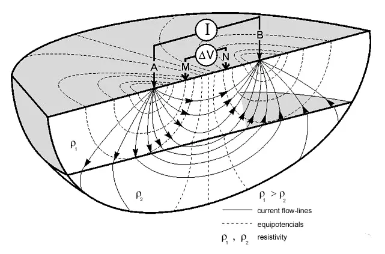
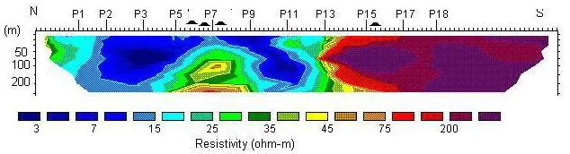

تعیین محل مناسب حفاری چاه
بررسی نقاط مختلف زمین و معرفی گزینه مناسبتر برای حفاری بر اساس دادههای ژئوالکتریک و شرایط زمینشناسی منطقه.
پیش از هزینه سنگین حفاری، زمین را بهتر بشناسید
مطالعه ژئوالکتریک معمولاً با هزینهای بسیار کمتر از حفاری ناموفق، به انتخاب آگاهانهتر محل و عمق حفاری کمک میکند و ریسک تصمیمگیری را با تکیه بر دادههای صحرایی، اطلاعات زمینشناسی و تجربه میدانی کاهش میدهد.
حفاری چاه بدون شناخت کافی از شرایط زیرسطحی میتواند با هزینه بالا، اتلاف زمان و نتیجه نامطمئن همراه باشد. در مقابل، هزینه انجام مطالعه ژئوالکتریک معمولاً بخش کوچکی از هزینه حفاری، تجهیز کارگاه و پیامدهای حفاری ناموفق است.
این مطالعه با بررسی تغییرات مقاومت الکتریکی زمین، اطلاعات ارزشمندی درباره جنس و ضخامت لایهها، عمق تقریبی سنگ بستر و شرایط احتمالی آب زیرزمینی فراهم میکند تا محل و عمق حفاری با آگاهی بیشتری انتخاب شود. هدف حذف کامل عدمقطعیت نیست؛ بلکه کاهش ریسک تصمیمگیری و جلوگیری از انتخابهای پرهزینه و کمپشتوانه است.

در مطالعات ژئوالکتریک، رفتار الکتریکی لایههای زیرسطحی بررسی میشود تا تصویر فنی بهتری از خاک، سنگ، شکستگیها و شرایط احتمالی آب زیرزمینی به دست آید.

در این روش، دو الکترود فلزی کوچک با نامهای A و B در زمین کوبیده میشوند و جریان الکتریکی از طریق آنها وارد زمین میشود. دو الکترود دیگر با نامهای M و N برای اندازهگیری اختلاف ولتاژ ایجادشده در زمین استفاده میشوند.
عمق مطالعه به فاصله الکترودها بستگی دارد؛ هرچه فاصله الکترودهای جریان بیشتر شود، جریان در بخش عمیقتری از زمین عبور میکند و امکان بررسی اعماق بیشتر فراهم میشود.
مقداری که از اندازهگیری جریان و ولتاژ محاسبه میشود «مقاومتویژه ظاهری» است، نه مقاومت حقیقی مستقیم لایهها. برای تبدیل این دادهها به مدل قابل تفسیر، از پردازش و مدلسازی کامپیوتری استفاده میشود تا ساختار مقاومتویژه زمین یا همان مقطع ژئوالکتریکی به دست آید.

مقطع ژئوالکتریکی میتواند ضخامت تقریبی و مقاومتویژه لایههای زیرسطحی را نشان دهد. با تفسیر این مقطع در کنار اطلاعات زمینشناسی و چاههای اطراف، میتوان درباره وجود احتمالی لایه آبدار، عمق مناسبتر حفاری، کیفیت نسبی آب از نظر شوری یا شیرینی، عمق سنگ بستر و ناپیوستگیهای زیرسطحی تصمیم فنیتری گرفت.
تمرکز این خدمات بر ژئوالکتریک و مقاومتویژه برای آب زیرزمینی، چاه ارت، خاک و ساختارهای کمعمق زیرسطحی است تا نتیجه مطالعه برای تصمیمهای اجرایی کارفرما روشن و کاربردی باشد.
خدمات با توجه به هدف پروژه، شرایط زمینشناسی، اطلاعات چاههای اطراف و محدودیتهای اجرایی طراحی میشوند تا تصمیم نهایی بر پایه داده و تحلیل فنی باشد، نه حدس و آزمون پرهزینه.
بررسی نقاط مختلف زمین و معرفی گزینه مناسبتر برای حفاری بر اساس دادههای ژئوالکتریک و شرایط زمینشناسی منطقه.
تخمین محدوده عمقی لایههای احتمالی آبدار و کمک به تعیین عمق هدف و حداکثر عمق منطقی حفاری.
بررسی شرایط نسبی آب از نظر شوری یا شیرینی بر پایه تفسیر مقاومتویژه و اطلاعات زمینشناسی منطقه.
مطالعه شرایط اطراف چاه موجود برای ارزیابی فنی جابهجایی محل حفاری یا بررسی امکان کفشکنی.
تحلیل تغییرات جانبی و عمقی دادهها برای شناسایی احتمالی گسلها، شکستگیها، حفرهها و ناپیوستگیهای زیرسطحی.
برآورد ضخامت آبرفت و تعیین عمق تقریبی رسیدن به سنگ بستر در محدوده مطالعه.
کمک به شناسایی محدودههای غیرعادی در خاک که میتواند با نشت فاضلاب، تغییر رطوبت یا آلودگی زیرسطحی مرتبط باشد.
بررسی شرایط الکتریکی و رطوبتی خاک برای برآورد اولیه میزان خورندگی و کمک به تصمیمگیری در پروژههای تأسیساتی و زیرساختی.
مطالعه شرایط زیرسطحی برای انتخاب محل مناسبتر چاه زهکش، از جمله در پروژههایی مانند استخرهای پرورش ماهی و مدیریت آب مازاد.
بررسی تغییرات مقاومت الکتریکی خاک برای انتخاب نقطه مناسبتر اجرای چاه ارت و کمک به کاهش ریسک اجرای غیراقتصادی یا کمبازده.

حضور مستقیم متخصص در عملیات: برداشت داده، کنترل کیفیت صحرایی و تفسیر نتایج با نظارت مستقیم کارشناس ژئوفیزیک انجام میشود تا تصمیمهای فنی پروژه فقط به اجرای دستگاه محدود نماند.
دریافت موقعیت زمین، هدف پروژه، اطلاعات چاههای اطراف و شرایط منطقه.
انتخاب آرایش، نقاط اندازهگیری و طول گسترش متناسب با هدف و شرایط زمین.
اندازهگیری مقاومتویژه ظاهری با تجهیزات ژئوالکتریک و کنترل کیفیت دادهها در محل.
مدلسازی دادهها و تطبیق نتایج با شرایط زمینشناسی، اطلاعات چاهها و شواهد میدانی.
ارائه نتایج، مقاطع، اولویتبندی نقاط و پیشنهاد فنی محل و عمق حفاری همراه با بیان ملاحظات و محدودیتها.
مقاطع مقاومتویژه، تغییرات جانبی و عمقی ویژگیهای الکتریکی زمین را نمایش میدهند. تفسیر آنها با توجه به زمینشناسی منطقه، اطلاعات چاههای اطراف و مشاهدات صحرایی انجام میشود.
نمونههایی از اجرای برداشتهای ژئوالکتریک در دشتها، اراضی کشاورزی و مناطق کوهستانی.

کارشناس ارشد ژئوفیزیک با بیش از ۲۰ سال سابقه تخصصی و میدانی
فعال در حوزه مطالعات ژئوفیزیکی، عملیات صحرایی و بررسی ساختارهای زیرسطحی، با تمرکز بر ارزیابی پتانسیل آب زیرزمینی، انتخاب محل مناسبتر حفاری، تعیین عمق سنگ بستر و تحلیل شرایط پیرامون چاههای موجود.
در هر پروژه، دادههای اندازهگیریشده در کنار زمینشناسی منطقه، اطلاعات چاههای موجود و شواهد محلی بررسی میشوند تا نتیجهای فنی، شفاف و واقعبینانه ارائه شود؛ نتیجهای که به کاهش ریسک و هزینه تصمیمگیری کمک میکند، بدون اینکه جایگزین قطعیتهای پس از حفاری و آزمایش بهرهبرداری شود.
خدمات معرفیشده در این وبسایت بهصورت مستقل ارائه میشود و ذکر سوابق سازمانی صرفاً برای معرفی تجربه حرفهای است.
ارزش مطالعه ژئوالکتریک در این است که پیش از ورود به هزینههای سنگین حفاری، تصویر فنی روشنتری از شرایط زیرسطحی ارائه میدهد و احتمال تصمیمگیری اشتباه را کاهش میدهد.
با این حال نتایج این مطالعات مبتنی بر اندازهگیری صحرایی، پردازش داده و تفسیر علمی است و ماهیت احتمالی دارد. مقدار نهایی آبدهی، کیفیت قطعی آب و شرایط بهرهبرداری تنها پس از حفاری، آزمایش پمپاژ و انجام آزمایشهای لازم قابل تعیین است. هیچ روش ژئوفیزیکی بهتنهایی تضمین قطعی برای وجود آب یا دبی مشخص ارائه نمیکند.
این مطالب برای آشنایی سریع کارفرما با کاربردهای ژئوالکتریک نوشته شدهاند و میتوانند مبنای گفتوگوی اولیه درباره پروژه باشند.
ژئوالکتریک یا روش مقاومتویژه الکتریکی یکی از روشهای کاربردی ژئوفیزیک کمعمق است که با تزریق جریان و اندازهگیری ولتاژ، تغییرات مقاومت الکتریکی زمین را بررسی میکند. نتیجه نهایی به شکل مقطع ژئوالکتریکی تفسیر میشود و برای شناخت لایهها، سنگ بستر و شرایط احتمالی آب زیرزمینی به کار میرود.
حفاری بدون بررسی فنی میتواند هزینه زیادی ایجاد کند و به نتیجه نامطمئن برسد. مطالعه ژئوالکتریک با هزینهای محدودتر، محل و عمق پیشنهادی حفاری را آگاهانهتر میکند و احتمال انتخاب نقطه نامناسب را کاهش میدهد.
برای اجرای چاه ارت، شناخت مقاومت الکتریکی خاک اهمیت زیادی دارد. بررسی ژئوالکتریک میتواند به انتخاب نقطه مناسبتر برای چاه ارت کمک کند و از اجرای پرهزینه در محل کمبازده جلوگیری کند.
تغییر رطوبت، شوری یا آلودگی در خاک میتواند روی مقاومت الکتریکی زمین اثر بگذارد. ژئوالکتریک در برخی پروژهها برای شناسایی محدودههای غیرعادی و هدایت بررسیهای تکمیلی نشت فاضلاب یا آلودگی زیرسطحی استفاده میشود.
خیر. مقدار قطعی آبدهی، دبی و کیفیت آب تنها پس از حفاری، آزمایش پمپاژ و آزمایشهای لازم مشخص میشود. ادعای تضمین قطعی معمولاً بیشتر جنبه جذب مشتری دارد. با این حال انجام مطالعه ژئوالکتریک کمک میکند بهترین نقطه قابل دفاع زمین و عمق منطقیتر حفاری انتخاب شود تا کارفرما آگاهانهتر وارد مرحله حفاری شود.
هزینه مطالعه معمولاً در برابر هزینه حفاری، تجهیز کارگاه و پیامدهای حفاری ناموفق بسیار کمتر است. به همین دلیل انجام مطالعه پیش از حفاری میتواند تصمیم اقتصادیتری برای کارفرما باشد.
موقعیت زمین، هدف پروژه، اطلاعات چاههای اطراف، دسترسی به محل، محدودیتهای اجرایی و هرگونه مشاهده محلی یا زمینشناسی میتواند برای تصمیمگیری اولیه مفید باشد.
خیر. علاوه بر ارزیابی پتانسیل آب زیرزمینی و تعیین محل حفاری چاه، این روش در بررسی چاه ارت، نشت فاضلاب، آلودگی خاک، خورندگی نسبی خاک، عمق سنگ بستر و برخی ساختارهای زیرسطحی نیز کاربرد دارد.
برای بررسی اولیه، موقعیت زمین، هدف پروژه و اطلاعات چاههای اطراف را ارسال کنید تا امکان انجام مطالعه، حدود کار و شرایط اجرایی بررسی شود.